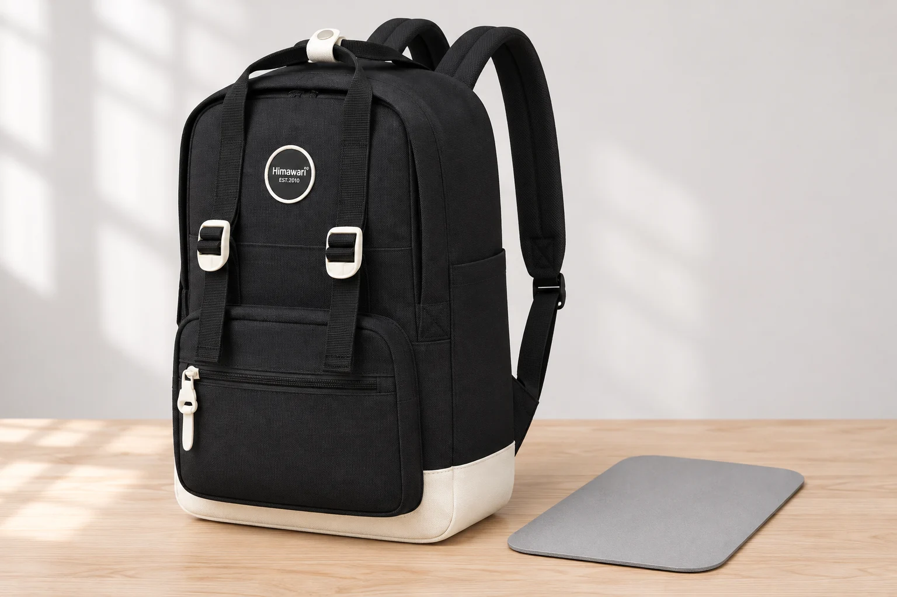
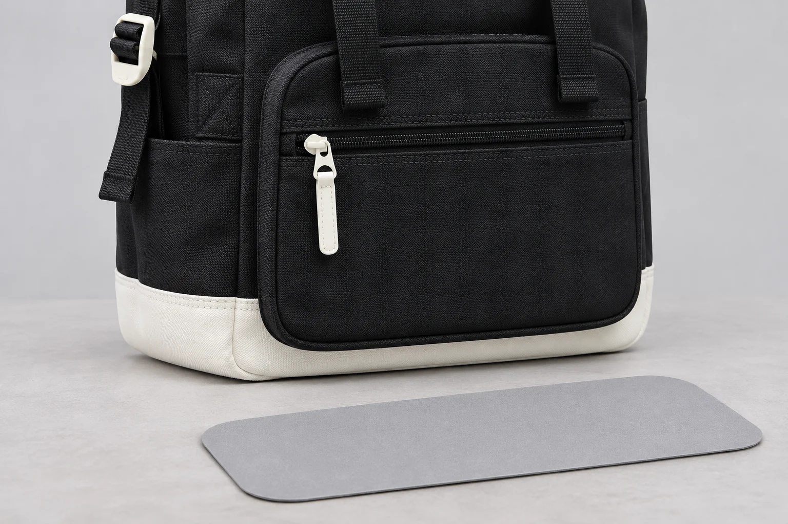

백팩 바닥에 판을 더 넣으면 모양이 잡힐까

백팩에 책 한 권을 넣었는데 바닥이 기울어 보이면 단단한 판을 깔고 싶어집니다. 바닥의 모양을 유지하려는 생각과 책을 받치려는 생각이 섞이기 쉽습니다. 판을 추가하기 전에는 어느 물건 때문에 어느 면이 달라지는지 살펴보세요. 가방 안에 새 부품을 넣는 일인 만큼 판의 크기뿐 아니라 두께와 가장자리, 꺼낼 때의 동작까지 달라집니다.
이 글에서는 No.1088M의 외부 크기 28 × 41.5 × 14 cm를 기준으로 삼습니다. 공개 제원은 가방 바깥의 치수이며 안쪽 바닥의 실측값은 없습니다. 이 숫자로 28 × 14 cm짜리 판을 주문할 수는 없습니다. 별도 바닥판이 기본 구성에 포함된다는 안내도 확인하지 못했습니다. 아래의 판은 추가 부품을 검토하는 상황을 설명하는 예입니다.
판을 찾기 전에 기울어진 곳을 봅니다
가방을 비우고 평평한 곳에 둔 다음 평소 넣던 물건을 하나씩 되돌려 놓습니다. 두꺼운 케이스를 한쪽 구석에 세웠을 때만 아래쪽이 튀어나온다면 그 물건의 자리를 바꾸어 볼 수 있습니다. 책 모서리가 안감 한 지점을 누르는 모습과 바닥 전체가 처지는 모습은 다릅니다. 어느 쪽인지 알아야 판으로 바꾸려는 상태도 설명할 수 있습니다.
물건이 적을 때의 모양만 보고 판이 필요하다고 정하지 않아도 됩니다. 빈 공간이 많은 가방은 안에 담은 물건에 따라 모양이 달라질 수 있습니다. 평소 짐을 넣은 뒤에도 불편한 위치가 남는지 보세요. 판이 없어도 책을 세운 방향을 바꾸거나 단단한 케이스의 모서리를 다른 물건과 떨어뜨려 보세요. 그렇게 옮겼을 때 원하는 배치가 되는지 먼저 비교합니다.
가방이 스스로 서지 않는다는 이유만으로 안쪽 받침을 추가하려는 경우도 있습니다. 물건을 받치는 면이 생겨도 가방 전체가 안정적으로 서는지는 별도입니다. 위쪽 짐의 위치와 내려놓는 바닥도 영향을 줍니다. 넘어질 때 곤란한 기기를 넣었다면 판의 유무를 믿고 손을 떼기보다 벽이나 선반처럼 가방을 둘 조건부터 정하는 편이 낫습니다.

외부 폭 14 cm로 안쪽 판을 자르지 않습니다
No.1088M의 앞뒤 외부 폭은 14 cm로 안내됩니다. 바깥 봉제선 사이에 보이는 폭과 안쪽에서 실제 물건이 놓이는 면은 같다고 보장할 수 없습니다. 안감의 여유분이나 바닥 모서리의 곡선, 수납칸이 차지하는 부분이 있을 수 있기 때문입니다. 제품마다 구조가 다르므로 판의 폭을 정하려면 해당 가방의 안쪽을 확인해야 합니다.
실물에서 크기를 살필 때도 원단을 팽팽하게 밀어 넓어진 길이를 기준으로 삼지 않습니다. 자연스럽게 놓인 바닥에 어느 정도의 면이 필요한지 보고 입구를 지나 넣고 뺄 수 있는지도 확인합니다. 바닥에는 놓이지만 꺼낼 때 입구나 주머니를 세게 밀어야 하는 판이라면 일상 관리가 번거로워집니다. 가방이 휘어야만 들어가는 치수는 피할 수 있습니다.
손으로 모양을 바꾸어 쓰는 천 가방에는 각진 직사각형이 잘 맞지 않을 수도 있습니다. 안쪽 모서리를 먼저 보세요. 둥글게 봉제된 구석에 판의 뾰족한 끝이 닿는지, 판이 움직일 때 안감의 같은 자리를 문지르는지 확인합니다. 내부를 뜯거나 원래의 고정 부품을 빼내는 작업까지 이어갈 필요는 없습니다.
더 단단해지는 것과 더 많이 담는 것은 다릅니다
판을 넣으면 판 자체의 두께와 무게가 더해집니다. 그만큼 내부에서 쓸 자리를 차지하므로 원래보다 수납량이 늘어난다고 볼 수 없습니다. 높이가 빠듯한 케이스를 넣는다면 바닥에 새 층이 생겼을 때 입구가 무리 없이 닫히는지도 다시 보아야 합니다. 판의 넓이만 맞춘 뒤 나머지 공간을 이전과 같다고 생각하기 쉽습니다.
단단한 받침을 추가해도 가방의 허용 하중이 커졌다고 말할 근거는 없습니다. 어깨끈과 손잡이, 봉제 부위는 원래의 가방 구조를 그대로 사용합니다. No.1088M의 공개 중량은 가방 기준 600 g이며 추가 체스트벨트는 제외한 값입니다. 여기에 사용자가 넣는 판과 짐의 무게는 각각 더해집니다. 다만 새 합계로 가방이 견딜 수 있는 무게를 알 수는 없습니다.
판을 완충재처럼 받아들이는 것도 주의할 부분입니다. 단단한 면으로 받치는 것과 충격을 줄이는 것은 다른 조건입니다. 별도의 보호 성능이 확인되지 않은 판을 넣었다는 이유로 노트북 케이스를 빼거나 깨지기 쉬운 물건을 바닥에 바로 둘 근거가 생기지는 않습니다. 기기를 보호하려는 목적이라면 먼저 그 기기에 맞는 보호 수단을 따로 고릅니다.
꺼내서 살펴볼 수 있는 상태로 둡니다
추가 부품을 선택한다면 설명서와 가방의 사용 안내를 함께 확인합니다. 재료의 가장자리가 거칠거나 표면이 벗겨진다면 안감과 닿을 상태부터 다시 볼 수 있습니다. 판이 안쪽을 누르며 들어가야 하거나 주머니 입구를 가린다면 크기가 맞는지 재검토하세요. 접착제로 붙이거나 바느질로 고정하기 전에 원래 가방에서 되돌릴 수 있는 범위인지도 생각합니다.
사용 중 가방 아래쪽에 새로운 자국이 생기면 판을 꺼내 앞뒤와 가장자리를 봅니다. 안감에 같은 방향의 자국이 남았는지, 판 밑에 작은 물건이 끼었는지 확인하면 바닥을 한꺼번에 더 세게 문지르는 일을 줄일 수 있습니다. 표면 관리가 필요할 때는 가방과 판 각각의 안내를 따릅니다. 판을 넣은 채로 가방 전체를 물에 담그는 방식으로 관리 범위를 넓히지 않습니다.
판매자에게 문의할 때는 이 모델에 분리 가능한 바닥 부품이 있는지와 사용자가 받침을 더해도 되는지를 따로 물어볼 수 있습니다. 모양을 잡고 싶은지, 특정 물건의 바닥을 받치려는지도 함께 적어 보세요. 답을 받기 전에는 외부 치수만으로 판을 제작하지 않고 현재 짐의 배치부터 조정해 볼 수 있습니다. 가방이 잘 서는 모습보다 안감과 물건을 무리하게 누르지 않는 상태가 선택 기준입니다.